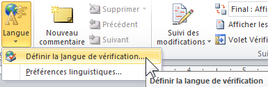
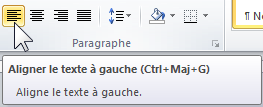
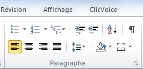
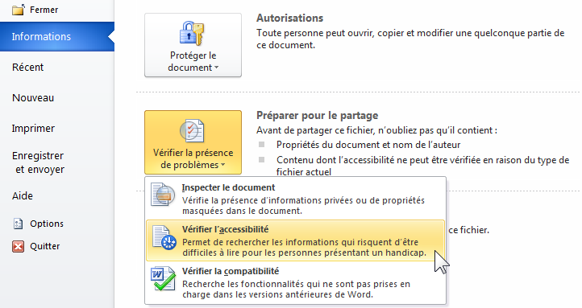

Créer un document Word accessibles
Cette partie décrit la marche à suivre pour rendre vos documents Word accessibles à tous, y compris aux utilisateurs des technologies d’assistance.
Langue
Définir la langue principale du document dans le menu : Fichier > Options > Langue.
Signaler tout changement de langue ponctuel en sélectionnant le groupe de mots concerné puis Révision > Langue > Définir la langue de vérification.

Ce sont ces attributs qui permettent qu’un lecteur d’écran restitue correctement le contenu dans la langue du texter.
Attributs du fichier
Renseigner les champs « Titre », « Auteur » et « Balises » dans la zone « Propriétés » (colonne de droite), accessible depuis le menu Fichier > Informations.
Ces informations accessibles à tous via un clic dans Windows sur un fichier (affichage dans la partie basse de la fenêtre de dialogue) ou via un clic droit dans Propriétés, sont aussi lues par un lecteur d’écran.

Titres
Utiliser les styles « Titre » et « Sous-titre » du menu Accueil (Titre 1, Titre 2, etc.).
Définir des intitulés clairs et précis, qui reflètent le contenu du paragraphe concerné.
Ceci permet de structurer le document et d’accéder directement à un contenu spécifique.
Table des matières
Insérer une table des matières via le menu Références > Table des matières.
Cela permet aux utilisateurs de trouver des informations plus aisément dans le document.
Rédaction des contenus
Limiter les abréviations et acronymes, et expliciter, à la première occurrence, ceux qui ne font pas partie du langage courant.
Conserver l’accentuation sur les majuscules (exemple : É ou Ç) : menu Insertion > Symbole ou les raccourcis clavier ci-dessous.

Liste des raccourcis clavier :
| Lettre | raccourci Windows | raccourci Mac |
|---|---|---|
| À | Alt Gr + \` (touche 7) puis A majuscule | Maj lock puis à |
| Ç | alt + 128 | Option + ç |
| È | Alt Gr + ` (touche 7) puis E majuscule | Maj lock puis è |
| É | alt + 144 | Maj lock puis é |
| Ê | ^ puis E majuscule | ^ puis E majuscule |
Mise en forme des contenus
Utiliser les styles prédéfinis pour la mise en forme des contenus : le style « Normal » doit être attribué à tous les textes des paragraphes (style par défaut), le style « citation » pour les citations, etc.
Utiliser une police de caractères sans empattement (extensions qui terminent les extrémités des caractères) comme Arial ou Helvetica, en corps 12 pixels minimum et un espacement entre les caractères normal ou élargi.
Commencer les phrases par une majuscule, ne pas écrire de phrase tout en majuscule ; limiter l’utilisation de l’italique.
Éviter de justifier le texte, de le centrer ou de l’aligner à droite ; préférer l’alignement à gauche.

Ne pas utiliser les zones de textes, leurs contenus n’est pas interprété par les lecteurs d’écran.
Ne pas utiliser les retours chariots pour sauter des lignes ou les tabulations successives (touche « Tab » du clavier  ) pour mettre en forme le contenu.
) pour mettre en forme le contenu.
Utiliser les fonctions Retrait, Espacement :
- Menu Mise en page > Paragraphe > Retrait ou Espacement ou Clic droit : « Paragraphe… »

Remarque : le menu « Tabulations… » accessible dans la fenêtre « Paragraphe » permet d’ajuster la taille des tabulations (ajuste « Taquets par défaut ») :


Utiliser l’option « Colonnes » de l’onglet Mise en page pour créer une mise en page sous forme de colonnes, et non les tableaux.
Utiliser le saut de page via le menu Insertion > Saut de page pour passer à la page suivante.
Numéroter les pages (menu Insertion > Numéro de page) pour permettre aux utilisateurs de se repérer dans le document.
Couleurs et contrastes
Assurer un contraste suffisant entre la couleur du texte et celle du fond : au minimum 4.5 / 1.
Si vous utilisez des combinaisons de couleurs différentes de celles préconisées par la charte Orange Groupe, téléchargez gratuitement l’outil Colour Contrast Analyzer qui vous permettra de vérifier très simplement la qualité de vos contrastes.
S’assurer que la couleur n’est pas le seul moyen utilisé pour communiquer l’information. Certaines personnes ne perçoivent pas ou mal les couleurs, il est donc primordial d’utiliser un moyen en plus de la couleur pour véhiculer l’information.
 Exemple incorrect : l'information est transmise uniquement par la couleur.
Exemple incorrect : l'information est transmise uniquement par la couleur.
 Exemple correct : l'information est transmise par la forme et la couleur
Exemple correct : l'information est transmise par la forme et la couleur
Listes à puces ou numérotées
Créer des listes en utilisant le style « liste » (à puces, numérotées ou à plusieurs niveaux) pour énumérer les éléments de même nature.

Images
Décrire l’information portée par l’image dans le champ « description » des propriétés de l’image.
- Pour les images porteuses d’informations : renseigner un texte de remplacement qui reprend le contenu informatif de l’image : clic droit > Format de l’image > Texte de remplacement > champ « Description ».
- Pour les images décoratives/illustratives : laisser le champ description vide.
- Pour les images informatives complexes : rédiger un court texte de remplacement (champ « Description ») indiquant l’emplacement de la description détaillée. Celle-ci doit être équivalente à l’information transmise par l’image et doit être à proximité de l’image ou accessible via un lien.
- Pour les images « lien » : Rédiger un texte de remplacement (champ « Description ») qui décrit la fonction ou la destination du lien.
- Pour les graphiques ou schémas : utiliser les composants Smart Art plutôt que des images ou une capture d’écran (menu Insertion > Smart Art). Le contenu informatif des graphiques doit être décrit dans le texte de remplacement (Format de l’objet ou de l’image > Texte de remplacement > Description).

Important : si vous utilisez une option de disposition autre que « aligné sur le texte » (via un clic droit sur l’image > renvoyer à la ligne automatiquement ou le menu Outils Image > Organiser), l’image et le texte présent dans la description de l’image seront ignorés par certains lecteurs d’écran.
Contenus audio et vidéo
Nos préconisations sur les contenus audio et vidéo
Liens
Rédiger des intitulés de lien clairs et explicites, ils doivent se suffire à eux-mêmes afin qu’on en comprenne leur destination.
En effet, une personne non-voyante va, pour naviguer plus rapidement dans un document, demander à son lecteur d’écran de lister l’ensemble des liens présents sur une page. Chaque intitulé de lien sera donc, lu isolé de son contexte visuel.
Signaler les liens qui déclenchent l’ouverture d’une nouvelle fenêtre :
- menu Insertion > Lien hypertexte > Info-bulle : ajouter « nouvelle fenêtre » dans le libellé
Enfin, renseigner le nom, le format, le poids et la langue du fichier si celle-ci est différente de la langue principale du document pour un lien qui permet de télécharger un fichier.

Tableaux de données
Structurer le plus simplement possible les tableaux de données : éviter de fusionner des cellules, d’insérer des images ou de laisser des cellules vides.
Les tableaux sont des composants difficilement accessibles pour un non-voyant. Il faut donc les utiliser avec parcimonie.
Ajouter une description s'il s'agit d'un tableau complexe, clic droit : Format de la forme > Texte de remplacement > Description.
Enfin, les tableaux ne doivent pas être utilisés à des fins de mise en forme.
Vérification finale
Enfin, utiliser le vérificateur d’accessibilité intégré (menu : Fichier > Vérifier la présence de problèmes > Vérifier l’accessibilité).

Ce vérificateur permet de détecter les principales erreurs et propose des solutions.
Convertir en fichier PDF
Pour transformer votre document en PDF, aller dans le menu : Fichier > Enregistrer sous puis de sélectionner le type de fichier PDF.
La case à cocher « Balises de structure de document pour l’accessibilité » doit être cochée.
À noter qu’avec Word 2010, les documents PDF générés peuvent présenter des problèmes d’accessibilité (notamment au niveau de la vocalisation des images). Ces problèmes ont été corrigés dans les versions ultérieures de Microsoft Office.

Pour vérifier l’accessibilité d’un document PDF : télécharger PDF Accessiblity Checker (PAC 3).
Ressources externes
- Créer des documents bureautiques accessibles, DINSIC (français).
- Accessibilité Word, WebAIM (anglais).